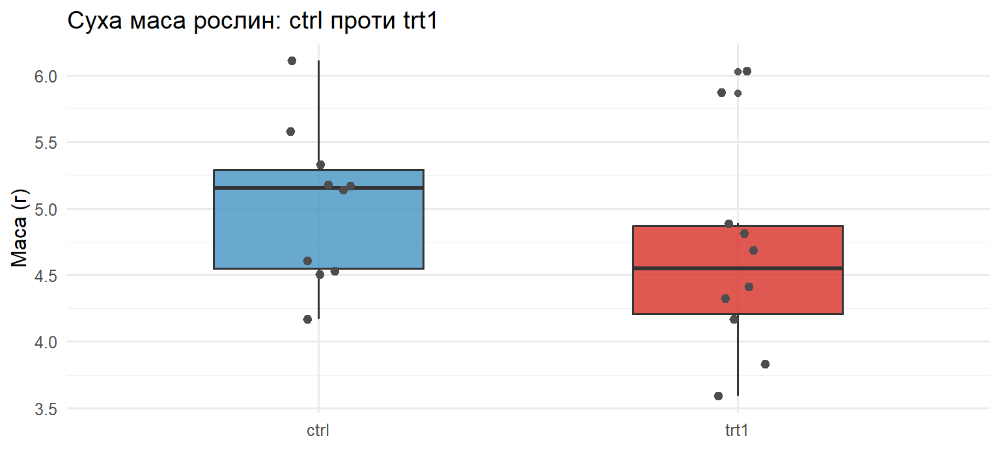
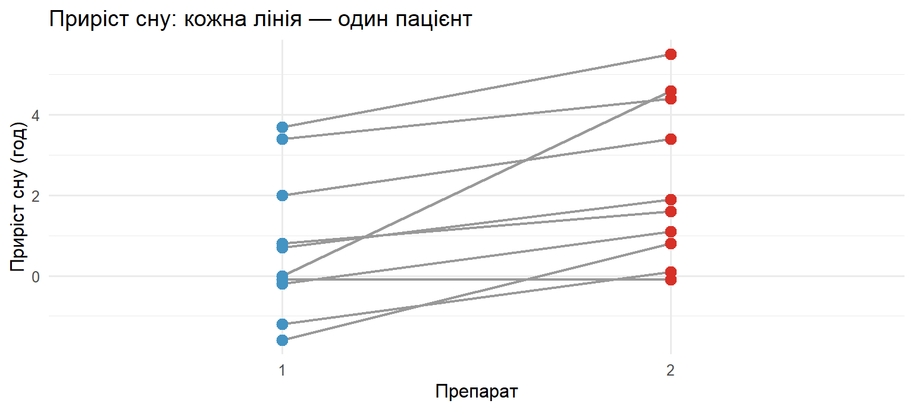
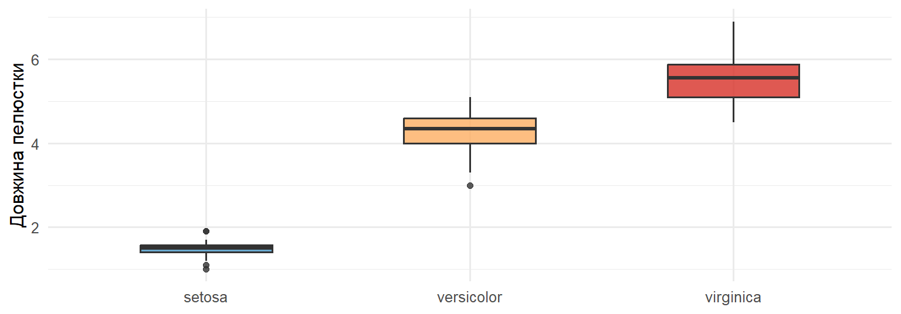
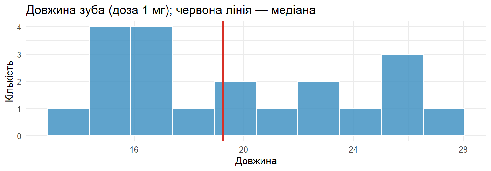
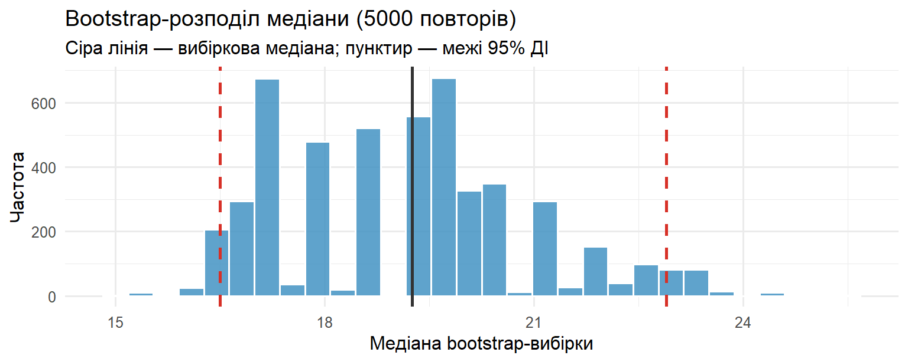

[1] 3 1 4 2STAT250: Теорія ймовірностей та статистика
Kyiv School of Economics
2026-06-29
Досі ми порівнювали середні за допомогою \(t\)-тестів. Вони чудові, але працюють лише за певних припущень:
| \(t\)-тест | Що припускає |
|---|---|
| одновибірковий / двовибірковий | дані приблизно нормальні (особливо при малому \(n\)) |
| усі | ознака виміряна в числовій шкалі, осмислене середнє |
| двовибірковий | часто — рівні дисперсії |
\(t\)-тест відповідає на питання про число — середнє \(\mu\). Уся його математика побудована на нормальному розподілі.
На практиці часто буває так:
У таких випадках висновок \(t\)-тесту може бути ненадійним. Потрібен інструмент, який не спирається на нормальність — непараметричні тести.
Ідея проста: замість самих значень працюймо з їхніми рангами (позиціями в упорядкованому ряду). Тоді форма розподілу й окремі викиди вже не керують результатом.
Ранг — це порядковий номер значення, коли всі дані вишикувані від найменшого до найбільшого.
Візьмемо числа \(7,\; 2,\; 9,\; 4\) і впорядкуємо їх:
| Значення (відсортовані) | 2 | 4 | 7 | 9 |
|---|---|---|---|---|
| Ранг | 1 | 2 | 3 | 4 |
Отже число 2 отримує ранг 1, 4 — ранг 2, 7 — ранг 3, 9 — ранг 4.
Зверніть увагу: ранги для
7, 2, 9, 4— це3, 1, 4, 2. Кожне число «знає» своє місце.
Якщо кілька значень однакові, вони ділять середній ранг. Нехай маємо \(5,\; 8,\; 8,\; 10\): два числа 8 претендують на місця 2 і 3, тож обидва отримують \(\tfrac{2+3}{2} = 2{,}5\).
Коли повторів багато, точні формули рангових тестів стають наближеними — R попереджає про це повідомленням “cannot compute exact p-value with ties”. Це не помилка, а нагадування, що \(p\)-value обчислено наближено.
Уявіть, що у вибірці 2, 4, 7, 9 останнє значення виявилось викидом 900:
| Значення | 2 | 4 | 7 | 900 |
|---|---|---|---|---|
| Ранг | 1 | 2 | 3 | 4 |
Середнє стрибнуло б із 5,5 до 228, а ранги не змінились — 900 так і лишається «найбільшим», ранг 4. Саме тому рангові тести:
| Питання | Тест | R |
|---|---|---|
| Чи різняться 2 незалежні групи? | Манна–Вітні U | wilcox.test(x ~ g) |
| Чи різняться 2 парні виміри? | Вілкоксона (знаково-ранговий) | wilcox.test(..., paired=TRUE) |
| Чи різняться 3+ груп? | Краскела–Волліса | kruskal.test(x ~ g) |
| Який довірчий інтервал для медіани? | Bootstrap | boot / власний цикл |
Перші три — рангові аналоги \(t\)-тестів та ANOVA. Останній — bootstrap — окрема універсальна ідея для оцінки невизначеності будь-якої статистики.
\[ \text{Дані} \;\to\; \text{статистика} \;\xrightarrow{\;H_0\;}\; \text{відомий розподіл} \;\Rightarrow\; p\text{-value} \]
Нагадаємо базові поняття, якими користуватимемось весь час:
Правило рішення: якщо \(p < \alpha\) → відхиляємо \(H_0\). Якщо \(p \ge \alpha\) → підстав відхилити немає.
PlantGrowth)Це непараметрична заміна двовибіркового \(t\)-тесту: порівнюємо дві незалежні групи.
Ідея на пальцях:
Тест перевіряє зсув розподілу (одна група загалом «вища» за іншу), а не конкретно середнє. Тому його не лякають викиди й ненормальність.
Ботанік досліджує, чи впливає нове добриво (trt1) на ріст рослин порівняно зі стандартними умовами (ctrl). Відгук — суха маса рослини (грами).
Чи відрізняється маса рослин між групами ctrl і trt1? \(\alpha = 0.05\). \[H_0:\; F_{ctrl} = F_{trt1} \quad\text{проти}\quad H_a:\; \text{розподіли зсунуті}.\]
Статистика \(U\) пов’язана із сумою рангів однієї групи:
\[ U = R_1 - \frac{n_1(n_1+1)}{2}, \]
де \(R_1\) — сума рангів першої групи, \(n_1\) — її обсяг. R показує її як \(W\).
pg <- PlantGrowth |>
filter(group %in% c("ctrl", "trt1")) |> # лишаємо тільки дві потрібні групи
mutate(group = factor(group))
pg |>
ggplot(aes(group, weight, fill = group)) +
geom_boxplot(alpha = 0.8, width = 0.5) +
geom_jitter(width = 0.08, color = "grey30", size = 2) +
scale_fill_manual(values = c("ctrl" = "#4393c3", "trt1" = "#d73027")) +
labs(title = "Суха маса рослин: ctrl проти trt1",
x = NULL, y = "Маса (г)", fill = NULL) +
theme_minimal(base_size = 12) +
theme(legend.position = "none")Боксплоти сильно перекриваються — явної різниці на око не видно. Перевіримо формально.

Щоб «побачити» механіку тесту, проранжуємо обидві групи разом:
# A tibble: 2 × 4
group n сума_рангів середній_ранг
<fct> <int> <dbl> <dbl>
1 ctrl 10 122. 12.2
2 trt1 10 87.5 8.75Якби добриво не діяло, середні ранги груп були б близькі. Тут вони відрізняються — питання лише, наскільки ця різниця більша за випадкову.
Wilcoxon rank sum test with continuity correction
data: weight by group
W = 67.5, p-value = 0.1986
alternative hypothesis: true location shift is not equal to 0\(W \approx 67.5\), \(p \approx 0.20 > 0.05\) → не відхиляємо \(H_0\). Доказів, що добриво trt1 змінює масу рослин, недостатньо.
Попередження про ties означає лише, що серед мас є однакові значення, тож \(p\)-value наближений.
Манна–Вітні: \(p \approx 0.20\). Двовибірковий \(t\)-тест: \(p \approx 0.25\). Висновок однаковий — різниця незначуща. Тести узгоджуються.
Чому тут краще Манна–Вітні?
sleep)Це непараметрична заміна парного \(t\)-тесту. Використовується, коли виміри залежні — наприклад, той самий пацієнт виміряний двічі (до/після, препарат A/препарат B).
Ідея на пальцях:
Якщо обидва препарати однакові, додатних і від’ємних різниць приблизно порівну → \(V\) «посередині». Якщо один стабільно кращий — майже всі різниці одного знаку → \(V\) близький до 0 або до максимуму.
Датасет sleep: кожен із 10 пацієнтів отримав обидва препарати; extra — приріст тривалості сну (год), group — який препарат.
# A tibble: 10 × 3
ID препарат_1 препарат_2
<fct> <dbl> <dbl>
1 1 0.7 1.9
2 2 -1.6 0.8
3 3 -0.2 1.1
4 4 -1.2 0.1
5 5 -0.1 -0.1
6 6 3.4 4.4
7 7 3.7 5.5
8 8 0.8 1.6
9 9 0 4.6
10 10 2 3.4Рядки не незалежні: значення в одного пацієнта пов’язані між собою. Тому порівнюємо різниці всередині пар, а не дві окремі групи.
sleep |>
ggplot(aes(group, extra, group = ID)) +
geom_line(color = "grey60", linewidth = 0.8) + # лінія = один пацієнт
geom_point(aes(color = group), size = 3) +
scale_color_manual(values = c("1" = "#4393c3", "2" = "#d73027")) +
labs(title = "Приріст сну: кожна лінія — один пацієнт",
x = "Препарат", y = "Приріст сну (год)", color = NULL) +
theme_minimal(base_size = 12) +
theme(legend.position = "none")Майже всі лінії піднімаються від препарату 1 до препарату 2 — натяк, що другий ефективніший.

\[H_0:\; \text{медіана різниць} = 0 \quad\text{проти}\quad H_a:\; \text{медіана різниць} \ne 0.\]
[1] 1.2 2.4 1.3 1.3 0.0 1.0 1.8 0.8 4.6 1.4Майже всі різниці додатні — препарат 2 системно дає більший приріст сну. Статистика: \(V = \sum_{d_i > 0} R_i\), де \(R_i\) — ранги модулів \(|d_i|\).
Wilcoxon signed rank test with continuity correction
data: g1 and g2
V = 0, p-value = 0.009091
alternative hypothesis: true location shift is not equal to 0\(V = 0\), \(p \approx 0.009 < 0.05\) → відхиляємо \(H_0\). Препарати дають різний ефект: другий збільшує сон сильніше.
\(V = 0\) означає, що жодна різниця не була на користь препарату 1 — усі додатні.
Вілкоксон: \(p \approx 0.009\). Парний \(t\)-тест: \(p \approx 0.003\). Обидва \(< 0.05\) → той самий висновок: препарати відрізняються.
Тут обидва тести згодні. Але якби в даних був сильний викид чи помітна скошеність, саме Вілкоксон дав би надійніший результат, бо не залежить від нормальності різниць.
iris)Це узагальнення Манна–Вітні на три і більше груп — непараметрична заміна однофакторного ANOVA.
Ідея на пальцях: ранжуємо всі спостереження разом; якщо групи однакові, їхні середні ранги мають бути близькі. Велика розбіжність середніх рангів → групи різні.
\[ H = \frac{12}{N(N+1)} \sum_{j=1}^{k} \frac{R_j^2}{n_j} - 3(N+1), \qquad df = k - 1, \]
де \(N\) — усього спостережень, \(k\) — число груп, \(R_j\) — сума рангів групи \(j\).
Велике \(H\) → середні ранги груп сильно різняться → малий \(p\)-value → відхиляємо \(H_0\).
Ботанік хоче з’ясувати, чи різниться довжина пелюстки (Petal.Length) між трьома видами ірисів: Setosa, Versicolor, Virginica.
Чи однаковий розподіл довжини пелюстки в усіх трьох видів? \(\alpha = 0.05\). \[H_0:\; F_{set} = F_{ver} = F_{vir} \quad\text{проти}\quad H_a:\; \text{хоча б один вид відрізняється}.\]
# A tibble: 3 × 5
Species n медіана min max
<fct> <int> <dbl> <dbl> <dbl>
1 setosa 50 1.5 1 1.9
2 versicolor 50 4.35 3 5.1
3 virginica 50 5.55 4.5 6.9
Setosa явно «коротша» за решту — групи на око дуже різні. Перевіримо формально.
Kruskal-Wallis rank sum test
data: Petal.Length by Species
Kruskal-Wallis chi-squared = 130.41, df = 2, p-value < 2.2e-16\(H \approx 130.4\), \(df = 2\), \(p < 2.2\times10^{-16}\) → рішуче відхиляємо \(H_0\). Принаймні один вид має іншу довжину пелюстки.
Але тест не каже, які саме види відрізняються. Для цього потрібен post-hoc.
Тест Краскела–Волліса дав лише «хтось відрізняється». Щоб дізнатись, які пари видів різні, порівнюємо їх попарно (3 порівняння: set–ver, set–vir, ver–vir).
Проблема: кожне порівняння має 5% ризику хибної знахідки. Робимо 3 — і сумарний ризик зростає. Тому застосовуємо поправку Бонферроні: множимо кожне \(p\)-value на число порівнянь (тут ×3). Так контролюємо загальну ймовірність помилки.
Pairwise comparisons using Wilcoxon rank sum test with continuity correction
data: iris$Petal.Length and iris$Species
setosa versicolor
versicolor < 2e-16 -
virginica < 2e-16 2.7e-16
P value adjustment method: bonferroni Усі три \(p\)-value набагато менші за 0.05 → всі три види значущо відрізняються один від одного за довжиною пелюстки.
Навіть після суворої поправки Бонферроні висновок стійкий: відмінності реальні, а не випадковий шум.
Уявіть: у нас є одна вибірка, і ми порахували медіану. Але наскільки ця оцінка стабільна? Якби ми зібрали дані ще раз, медіана була б іншою — а ми не можемо повторити експеримент.
Ідея bootstrap (метафора): наша вибірка стає «мінісвітом». Ми багато разів тягнемо з неї нову вибірку того ж розміру з поверненням (одне значення може потрапити двічі, інше — жодного разу). Для кожної рахуємо медіану — і отримуємо багато медіан, ніби повторили експеримент тисячі разів.
Розкид цих «псевдо-медіан» показує, наскільки наша оцінка надійна. З нього будуємо довірчий інтервал — діапазон правдоподібних значень медіани в популяції.
Нагадаємо два поняття:
Для середнього є проста формула \(SE = s/\sqrt{n}\). Для медіани простої формули немає! Тут і рятує bootstrap: він емпірично відтворює розкид медіани без жодних формул і припущень про розподіл.
Дослідник вивчає вплив вітаміну C на ріст зубів морських свинок. Розглядаємо лише тварин, що отримували дозу 1 мг/день.
Оцінити медіану довжини зуба в популяції та побудувати 95% bootstrap-довірчий інтервал для неї.
Min. 1st Qu. Median Mean 3rd Qu. Max.
13.60 16.25 19.25 19.73 23.38 27.30 tibble(len = tooth1$len) |>
ggplot(aes(len)) +
geom_histogram(bins = 10, fill = "#4393c3", color = "white", alpha = 0.85) +
geom_vline(xintercept = median(tooth1$len), color = "#d73027", linewidth = 1) +
labs(title = "Довжина зуба (доза 1 мг); червона лінія — медіана",
x = "Довжина", y = "Кількість") +
theme_minimal(base_size = 12)
Генеруємо \(B = 5000\) вибірок із поверненням і для кожної рахуємо медіану:
[1] 5000Bootstrap-стандартна похибка — це просто розкид (стандартне відхилення) отриманих медіан:

Розподіл медіан показує всі правдоподібні значення. 95% із них лежать між пунктирними лініями.
Беремо 2,5-й і 97,5-й перцентилі bootstrap-розподілу — між ними лежить 95% медіан:
95% bootstrap-ДІ для медіани ≈ [16.5, 22.9]. З надійністю 95% істинна медіана довжини зуба (при дозі 1 мг) лежить у цьому діапазоні.
bootBOOTSTRAP CONFIDENCE INTERVAL CALCULATIONS
Based on 5000 bootstrap replicates
CALL :
boot.ci(boot.out = boot_out, type = "perc")
Intervals :
Level Percentile
95% (16.5, 22.9 )
Calculations and Intervals on Original ScaleІнтервал від пакета boot практично збігається з нашим ручним. Це підтверджує, що алгоритм ми реалізували правильно — пакет лише автоматизує ту саму ідею.
| № | Задача | Метод | R | Результат |
|---|---|---|---|---|
| 1 | Добриво й ріст рослин | Манна–Вітні U | wilcox.test(x~g) |
\(p\approx0.20\) — різниці немає |
| 2 | Два препарати для сну | Вілкоксона (парний) | wilcox.test(paired=TRUE) |
\(p\approx0.009\) — препарати різні |
| 3 | Довжина пелюстки 3 видів | Краскела–Волліса | kruskal.test |
\(p<10^{-15}\) — види різні |
| 4 | Медіана довжини зуба | Bootstrap | boot / replicate |
95% ДІ ≈ [16.5, 22.9] |
Дякую за увагу!
STAT250 · KSE · Практичне заняття 8